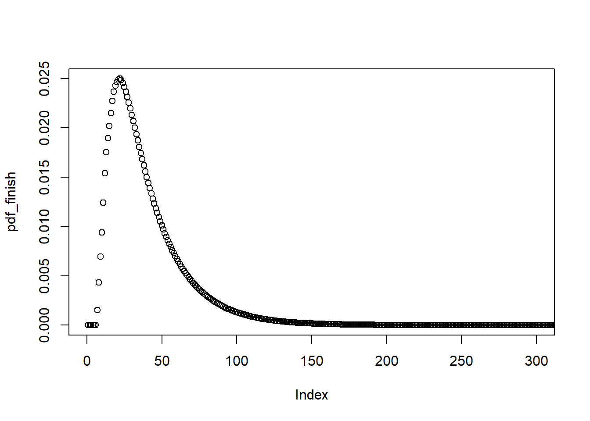

8 Chutes and Ladders
Chutes and Ladders Board
8.1 Overview
Chutes and Ladders is one of my least favorite games to play. Even though the dice introduce randomness into the game, it still feels like you are just going through the motions of a deterministic process, waiting to see who comes out the winner. There are no decisions to make and no way that you can impact the game or improve your odds of winning. It feels very passive.
I remember when I was about 22, working at the University of Cincinnati, and thinking about how much I hate this game. I wondered how long the game takes to play on average. With the unfettered access university employees get to academic journals, I came across an article:
“How Long Is a Game of Snakes and Ladders?” (S.C. Althoen, L. King and K.Schilling, The Mathematical Gazette, Vol. 77, No. 478, pp. 71-76, Mar. 1993). linke here
Not only did this article provide an answer: 39.2 turns on average, it also provided an exact fractional representation of the expected game length:
\[ \frac{225837582538403273407117496273279920181931269186581786048583}{5757472998140039232950575874628786131130999406013041613400} \]
I thought that was pretty bad-ass! The paper also explained how the entire game could be modeled as a “state-absorbing Markov chain”, which sounded fun to work with. Of course, it wasn’t enough just to get the answer. I wanted to reproduce it myself and learn more about these Markov chains. So that’s exactly what I did.
8.2 Markov Processes and Chains
A Markov process is a process whose future state is entirely determined by its current state. It does not matter what has come before. The current state is enough to know what will come next. All you really need is some way to represent the current state, and then some kind of transition function you apply to the current state to get the next state. This can then be iterated forward in discrete steps to discover future states. A “Markov chain” refers to the model you build to describe the particular process.
In Chutes-and-Ladders the current state can be modeled by a 101 element vector. This vector represents the 100 positions on the board (labeled 1 to 100) and the starting position (position 0) which is off the board. The player begins in position 0, so that we initialize our state to a vector of all zeroes except for a 1 in the first element.
The transition matrix represents the roll of a die and what can happen to your player when that happens. With a 6-sided die there is a 1/6 chance of rolling each number, and each number indicates the number of states you will advance. Thus, if you are on space #10 you have a 1/6 chance of being on space #11 the next round, a 1/6 chance of being on space #12, and so on through space #16. This would be true if there were no chutes or ladders. Actually, there is a chute on space #16 that takes you back to space #6. So the transition matrix would need to be adjusted to show that you actually have a 1/6 chance of going to space #6 and a zero chance of going to #16. The R code below builds the appropriate initial state vector and transition matrix for the game:
state0 <- c(1, rep(0, 100))
T_matrix <- matrix(0, nrow=101, ncol=101)
for (i in 0:101) {
for (j in 1:6) {
next_space <- i + j
if (next_space > 101) { # must land on last space exactly
next_space <- i
}
T_matrix[next_space, i] <- T_matrix[next_space, i] + 1/6
}
}
df_special <- tibble::tribble(
~type, ~from, ~to,
"L", 1, 38,
"L", 4, 14,
"L", 9, 31,
"L", 21, 42,
"L", 28, 84,
"L", 36, 44,
"L", 51, 67,
"L", 71, 91,
"L", 80, 100,
"C", 16, 6,
"C", 47, 26,
"C", 49, 11,
"C", 56, 53,
"C", 62, 19,
"C", 64, 60,
"C", 87, 24,
"C", 93, 73,
"C", 95, 75,
"C", 98, 78
)
for (i in 1:nrow(df_special)) {
T_matrix[df_special$to[i]+1,] <- T_matrix[df_special$to[i]+1,] + T_matrix[df_special$from[i]+1,]
T_matrix[df_special$from[i]+1,] <- 0
}We can then simulate a turn in the game simply by multiplying our state vector by the transition matrix. After one turn we have the following:
## [1] 0.0000000 0.0000000 0.1666667 0.1666667 0.0000000 0.1666667 0.1666667
## [8] 0.0000000 0.0000000 0.0000000 0.0000000 0.0000000 0.0000000 0.0000000
## [15] 0.1666667 0.0000000 0.0000000 0.0000000 0.0000000 0.0000000 0.0000000
## [22] 0.0000000 0.0000000 0.0000000 0.0000000 0.0000000 0.0000000 0.0000000
## [29] 0.0000000 0.0000000 0.0000000 0.0000000 0.0000000 0.0000000 0.0000000
## [36] 0.0000000 0.0000000 0.0000000 0.1666667 0.0000000 0.0000000 0.0000000
## [43] 0.0000000 0.0000000 0.0000000 0.0000000 0.0000000 0.0000000 0.0000000
## [50] 0.0000000 0.0000000 0.0000000 0.0000000 0.0000000 0.0000000 0.0000000
## [57] 0.0000000 0.0000000 0.0000000 0.0000000 0.0000000 0.0000000 0.0000000
## [64] 0.0000000 0.0000000 0.0000000 0.0000000 0.0000000 0.0000000 0.0000000
## [71] 0.0000000 0.0000000 0.0000000 0.0000000 0.0000000 0.0000000 0.0000000
## [78] 0.0000000 0.0000000 0.0000000 0.0000000 0.0000000 0.0000000 0.0000000
## [85] 0.0000000 0.0000000 0.0000000 0.0000000 0.0000000 0.0000000 0.0000000
## [92] 0.0000000 0.0000000 0.0000000 0.0000000 0.0000000 0.0000000 0.0000000
## [99] 0.0000000 0.0000000 0.0000000We have a 1/6 chance of ending up in spaces: 2, 3, 5, 14, 38.
When we take the next step, these probabilities start to spread out:
## [1] 0.00000000 0.00000000 0.00000000 0.02777778 0.00000000 0.05555556
## [7] 0.11111111 0.11111111 0.11111111 0.00000000 0.05555556 0.05555556
## [13] 0.02777778 0.00000000 0.05555556 0.02777778 0.00000000 0.02777778
## [19] 0.02777778 0.02777778 0.02777778 0.00000000 0.00000000 0.00000000
## [25] 0.00000000 0.00000000 0.00000000 0.00000000 0.00000000 0.00000000
## [31] 0.00000000 0.08333333 0.00000000 0.00000000 0.00000000 0.00000000
## [37] 0.00000000 0.00000000 0.00000000 0.02777778 0.02777778 0.02777778
## [43] 0.02777778 0.02777778 0.02777778 0.00000000 0.00000000 0.00000000
## [49] 0.00000000 0.00000000 0.00000000 0.00000000 0.00000000 0.00000000
## [55] 0.00000000 0.00000000 0.00000000 0.00000000 0.00000000 0.00000000
## [61] 0.00000000 0.00000000 0.00000000 0.00000000 0.00000000 0.00000000
## [67] 0.00000000 0.00000000 0.00000000 0.00000000 0.00000000 0.00000000
## [73] 0.00000000 0.00000000 0.00000000 0.00000000 0.00000000 0.00000000
## [79] 0.00000000 0.00000000 0.00000000 0.00000000 0.00000000 0.00000000
## [85] 0.00000000 0.00000000 0.00000000 0.00000000 0.00000000 0.00000000
## [91] 0.00000000 0.00000000 0.00000000 0.00000000 0.00000000 0.00000000
## [97] 0.00000000 0.00000000 0.00000000 0.00000000 0.00000000They start to reflect the various ways the game can play out based upon our first roll and second roll. And of course, we could find the probabilities describing the board after N turns with the simple equation:
\[ x_N = T^N x_0 \]
8.3 Statistics
We can now ask ourselves questions such as: how many turns will it take before we have a 50% chance of ending the game? (i.e. what is the median length of a 1 player game?)
state <- state0
n_steps <- 0
while(TRUE) {
state <- T_matrix %*% state
n_steps <- n_steps + 1
if (state[101] >= 0.5) {break}
}
cat(paste0("Median Game Length = ", n_steps))## Median Game Length = 32While it is possible in theory for games to go on forever (you can always keep hitting those slides), we can put an upper bound on what is practical by measuring how many turns before we have a 99.9999% chance of finishing the game:
state <- state0
n_steps <- 0
while(TRUE) {
state <- T_matrix %*% state
n_steps <- n_steps + 1
if (state[101] >= 0.999999) {break}
}
cat(paste0("Max Game Length = ", n_steps))## Max Game Length = 352It is very unlikely that a 1-player game would go beyond 300 turns.
With this upper bound in mind lets build a vector containing the probabilities of ending the game at each turn:
state <- state0
cdf_finish <- rep(0,1000)
for (i in 1:1000) {
state <- T_matrix %*% state
cdf_finish[i] <- state[101]
}
pdf_finish <- diff(c(0, cdf_finish))
plot(pdf_finish, xlim=c(0, 300))
We can now answer all kinds of fun questions. What is the average length of a 1-player game:
## Average Length of Game = 39.225122308183This is exactly the answer that was given in the paper. (Hoo-Wah!)
But how many times do you play Chutes and Ladders by yourself? Let’s tackle a topic that wasn’t covered in the paper: the expected length of multi-player games. We can calculate this by producing a probability distribution indicating the probability that none of the players have finished the game and then taking the complement of this:
cdf_still_playing <- 1 - cdf_finish
cdf_still_playing2 <- cdf_still_playing ^ 2
cdf_finish2 <- 1 - cdf_still_playing2
pdf_finish2 <- diff(c(0, cdf_finish2))
plot(pdf_finish2)result <- weighted.mean(x=1:1000, w=pdf_finish2)
cat(paste0("Average Length of 2 Player Game = ", result))## Average Length of 2 Player Game = 26.3309566420474We can also do the same for any number of players:
get_average_game_length <- function(n_players) {
cdf_still_playing <- 1 - cdf_finish
cdf_still_playing_n <- cdf_still_playing ^ n_players
cdf_finish_n <- 1 - cdf_still_playing_n
pdf_finish_n <- diff(c(0, cdf_finish_n))
weighted.mean(x=1:1000, w=pdf_finish_n)
}
n_players <- 1:4
avg_game_length <- sapply(1:4, get_average_game_length)
df_result <- data.frame(
n_players = n_players,
avg_game_turns = avg_game_length,
avg_game_minutes = avg_game_length * n_players * 10 / 60
)
knitr::kable(df_result)| n_players | avg_game_turns | avg_game_minutes |
|---|---|---|
| 1 | 39.22512 | 6.537520 |
| 2 | 26.33096 | 8.776986 |
| 3 | 21.72805 | 10.864025 |
| 4 | 19.26697 | 12.844650 |
In the table above we have added a column for the expected game length in minutes. This is assuming that each player takes 10 seconds to move. Notice that even though the game with more players ends in fewer turns, these games actually take longer because more people have to move on each turn.
So next time someone asks if you want to play Chutes and Ladders, pull up these figures and you’ll know what you’re signing up for (on average). Let’s just hope you don’t get stuck in one of those rare 300+ turn games!